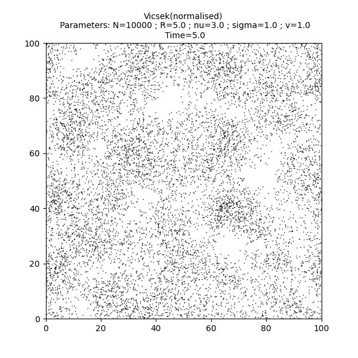
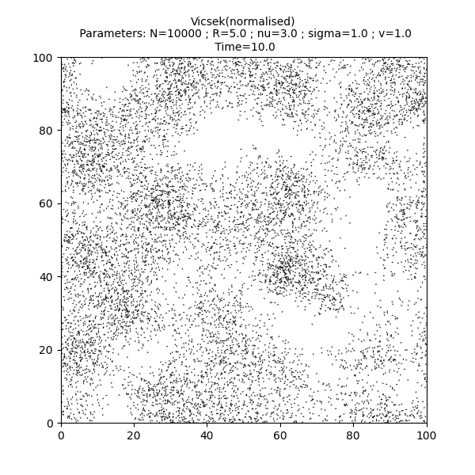
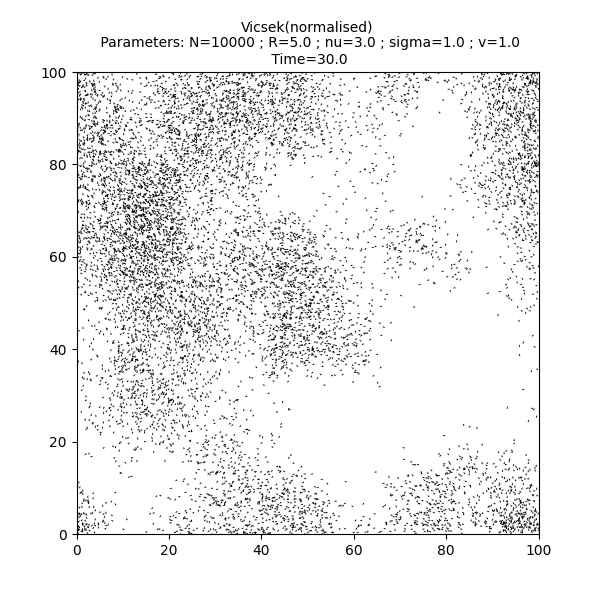
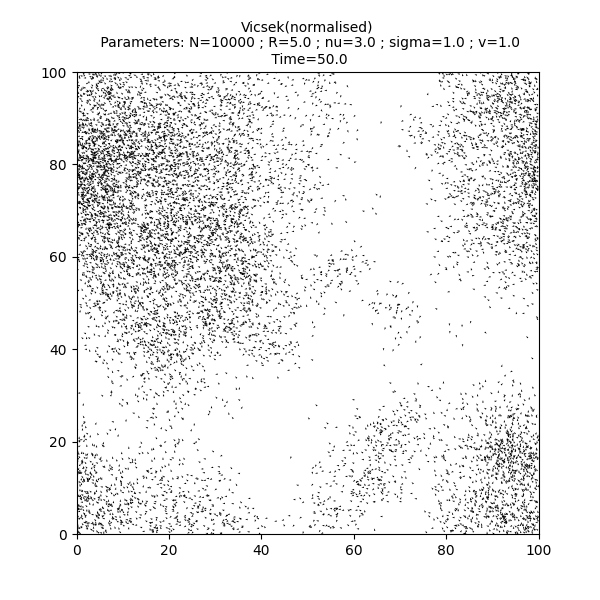
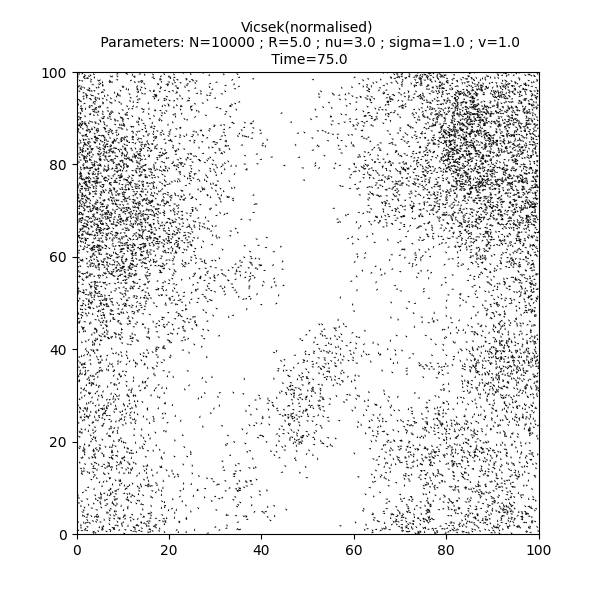
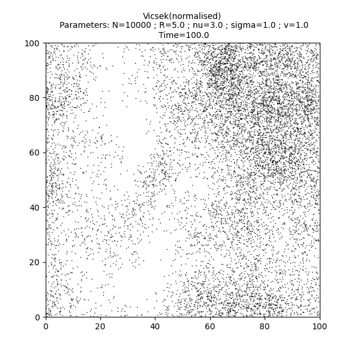
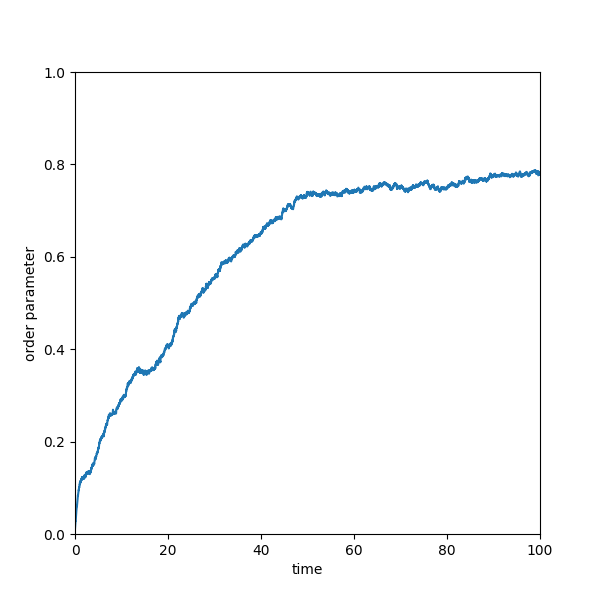

Note
Click here to download the full example code
Tutorial 01: Particles and models¶
A particle system is an instance of one of the classes defined in the module sisyphe.particles.
- Particles
The basic class
sisyphe.particles.Particlesdefines a particle system by the positions.- Kinetic particles
The class
sisyphe.particles.KineticParticlesdefines a particle system by the positions and the velocities.- Body-oriented particles.
The class
sisyphe.particles.BOParticlesdefines a particle system in 3D by the positions and the body-orientations which are a rotation matrices in \(SO(3)\) stored as quaternions.
A model is a subclass of a particle class. Several examples are defined in the module sisyphe.models. For example, let us create an instance of the Vicsek model sisyphe.models.Vicsek which is a subclass of sisyphe.particles.KineticParticles.
First, some standard imports…
import time
import torch
If CUDA is available, the computations will be done on the GPU and on the CPU otherwise. The type of the tensors (simple or double precision) are defined by the type of the initial conditions. Here and throughout the documentation, we work with single precision tensors.
use_cuda = torch.cuda.is_available()
dtype = torch.cuda.FloatTensor if use_cuda else torch.FloatTensor
We take initially \(N\) particles uniformly scattered in a box of size \(L\) with uniformly sampled directions of motion.
N = 10000
L = 100
pos = L*torch.rand((N,2)).type(dtype)
vel = torch.randn(N,2).type(dtype)
vel = vel/torch.norm(vel,dim=1).reshape((N,1))
Then we define the interaction radius \(R\), the speed of the particles \(c\) and the drift and diffusion coefficients, respectively \(\nu\) and \(\sigma\).
R = 5.
c = 1.
nu = 3.
sigma = 1.
We take a small discretisation time step.
dt = .01
Finally, we define an instance of the Vicsek model with these parameters.
from sisyphe.models import Vicsek
simu = Vicsek(
pos = pos,
vel = vel,
v = c,
sigma = sigma,
nu = nu,
interaction_radius = R,
box_size = L,
dt = dt)
Note
The boundary conditions are periodic by default, see Tutorial 03: Boundary conditions.
So far, nothing has been computed. All the particles are implemented as Python iterators: in order to compute the next time step of the algorithm, we can call the method __next__(). This method increments the iteration counter by one and updates all the relevant quantities (positions and velocities) by calling the method update() which defines the model.
print("Current iteration: "+ str(simu.iteration))
simu.__next__()
print("Current iteration: "+ str(simu.iteration))
Out:
Current iteration: 0
Current iteration: 1
On a longer time interval, we can use the methods in the module sisyphe.display. For instance, let us fix a list of time frames.
frames = [5., 10., 30., 50., 75., 100]
Using the method sisyphe.display.display_kinetic_particles(), the simulation will run until the last time in the list frames. The method also displays a scatter plot of the particle system at each of the times specified in the list and finally compute and plot the order parameter.
from sisyphe.display import display_kinetic_particles
s = time.time()
it, op = display_kinetic_particles(simu, frames, order=True)
e = time.time()
- 
- 
- 
- 
- 
- 
- 
Out:
Progress:0%
Progress:1%
Progress:2%
Progress:3%
Progress:4%
Progress:5%
Progress:6%
Progress:7%
Progress:8%
Progress:9%
Progress:10%
Progress:11%
Progress:12%
Progress:13%
Progress:14%
Progress:15%
Progress:16%
Progress:17%
Progress:18%
Progress:19%
Progress:20%
Progress:21%
Progress:22%
Progress:23%
Progress:24%
Progress:25%
Progress:26%
Progress:27%
Progress:28%
Progress:29%
Progress:30%
Progress:31%
Progress:32%
Progress:33%
Progress:34%
Progress:35%
Progress:36%
Progress:37%
Progress:38%
Progress:39%
Progress:40%
Progress:41%
Progress:42%
Progress:43%
Progress:44%
Progress:45%
Progress:46%
Progress:47%
Progress:48%
Progress:49%
Progress:50%
Progress:51%
Progress:52%
Progress:53%
Progress:54%
Progress:55%
Progress:56%
Progress:57%
Progress:58%
Progress:59%
Progress:60%
Progress:61%
Progress:62%
Progress:63%
Progress:64%
Progress:65%
Progress:66%
Progress:67%
Progress:68%
Progress:69%
Progress:70%
Progress:71%
Progress:72%
Progress:73%
Progress:74%
Progress:75%
Progress:76%
Progress:77%
Progress:78%
Progress:79%
Progress:80%
Progress:81%
Progress:82%
Progress:83%
Progress:84%
Progress:85%
Progress:86%
Progress:87%
Progress:88%
Progress:89%
Progress:90%
Progress:91%
Progress:92%
Progress:93%
Progress:94%
Progress:95%
Progress:96%
Progress:97%
Progress:98%
Progress:99%
Print the total simulation time and the average time per iteration.
print('Total time: '+str(e-s)+' seconds')
print('Average time per iteration: '+str((e-s)/simu.iteration)+' seconds')
Out:
Total time: 19.33805775642395 seconds
Average time per iteration: 0.0019336124144009549 seconds
Total running time of the script: ( 0 minutes 22.882 seconds)